🐶 청각장애 반려인과 반려견을 위한 IoT 기반 훈련벨 및 알림 어플

훈련벨 프로토타입 제작 회고
- 필드리서치를 통해 아두이노 블루투스로 앱과 어플을 연결하는 것으로 결정. 그러나 팀 내 아두이노 관련 경험자가 없어 팀원 1명과 함께 키트를 선구매해 파악해보기로 함.
- 키트 실험 결과, 최종적으로 아두이노 우노+WIFI D1 R2 보드를 무선으로 PC와 연결하는 것으로 방향성 잡음.
- 이에 대한 교수님 자문- 아두이노 키트 종류마다 가격 상이하니, 비용 관련 논의 꼭 필요함.
- 벨 전력 공급 문제 해결: 건전지를 활용한 충전? USB를 활용한 충전? 논의 필요함.
- 아두이노 회로 특성 상 연결선이 필요함 → 실제 벨 구현에 제약이 될 것. 해결 방안 찾아야 함. (무선연결 가능 여부, 비용 부담 문제)
- 무선인 경우 각 훈련벨에 아두이노 연결, 유선인 경우 아두이노 한 개만 필요
- 각 훈련벨의 불루투스 여러개 연결 작업이 수고스러움
→ 아두이노 회로 특성 상 연결선이 필요함 → 실제 벨 구현에 제약이 될 것. 해결 방안 찾아야 함. (무선연결 가능 여부, 비용 부담 문제)
-
팀 수료 후, 프로토타입 제작 과정 공유받음_이후 과정은 팀원이 인수인계받아 3D 프린터로 제작해보는 것까지 완료함.
- 3D프린터로 제작한 훈련벨 프로토타입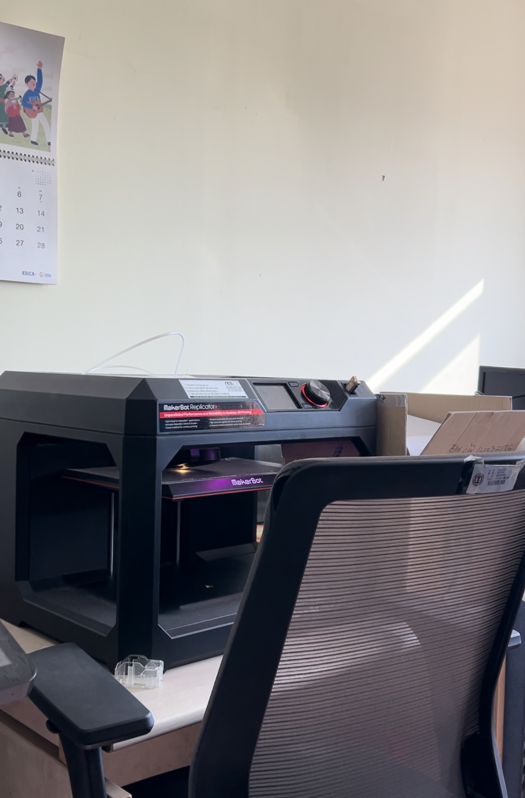
바우와우 벨 샘플 제작을 위해 교내 3D 프린터기 사용
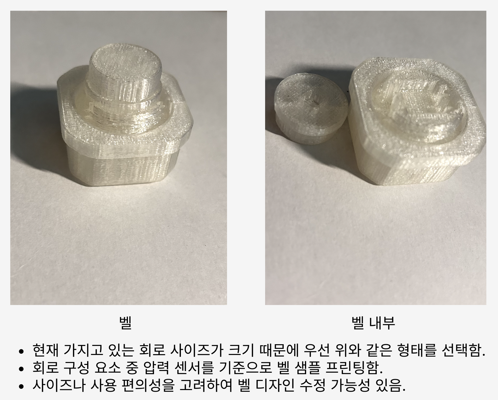
바우와우 벨 샘플 제작
-
프로토타입 제작 팀원과 함께 작성한 보고서
바우와우 어플리케이션 프로토타입
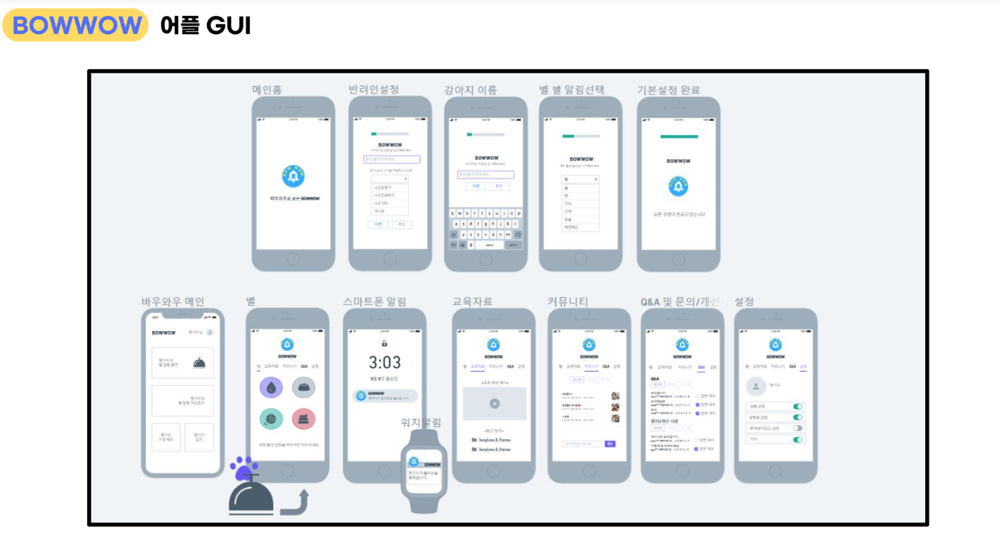
바우와우 BM 설명
문제인식배경
청각장애인의 수는 41만명이나, 현재 활동중인 보청견의 수는 전국 75마리로 추정됩니다. 통계청에 따르면 반려견을 기르는 청각장애인의 수는 7만3천명가량이 해당됩니다.
이들은 왜 보청견이 아닌 반려견을 키우는 것일까요?
먼저 반려견, 그리고 보청견과 같은 청각도우미견의 차이를 짧게 말씀드리자면, 반려견은 한 가족처럼 사람과 더불어 살아가며 보호자와의 정서적 교류를 위해 함께 생활하는 존재이고 청각도우미견은 장애인들의 보행을 도우며 반려동물 출입금지구역에서 예외적으로 입장 가능한 존재입니다.
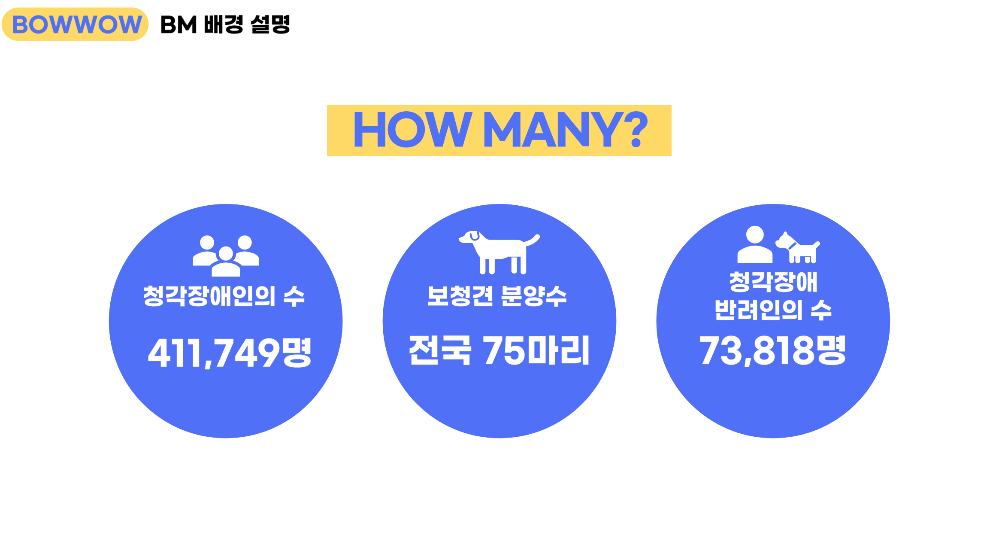
그래서 저희는 적은 보청견 수와 미약한 관리 등으로 청각장애인이 보청견이 아닌 반려견과 함께 살아가는 경우가 많다는 것을 인식했습니다. 그러나 청각장애인들이 반려견과 함께 살면서 여러 문제가 발생했는데요.
→ 즉 소리의 구분이 어려운 청각장애 반려인이 반려견의 소리와 표현을 인지하고 이해하는데 한계가 존재한다는 문제가 발생했습니다.
기존 솔루션과 한계점
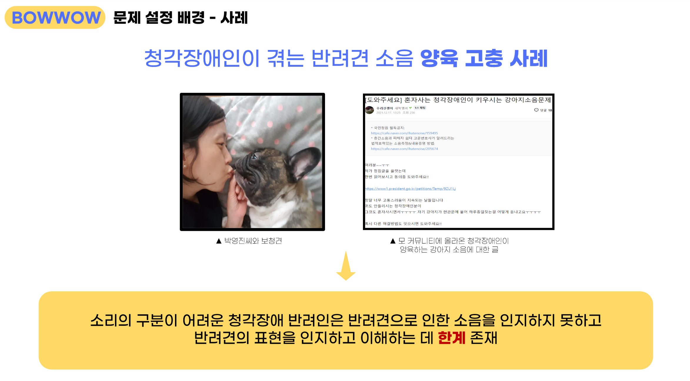
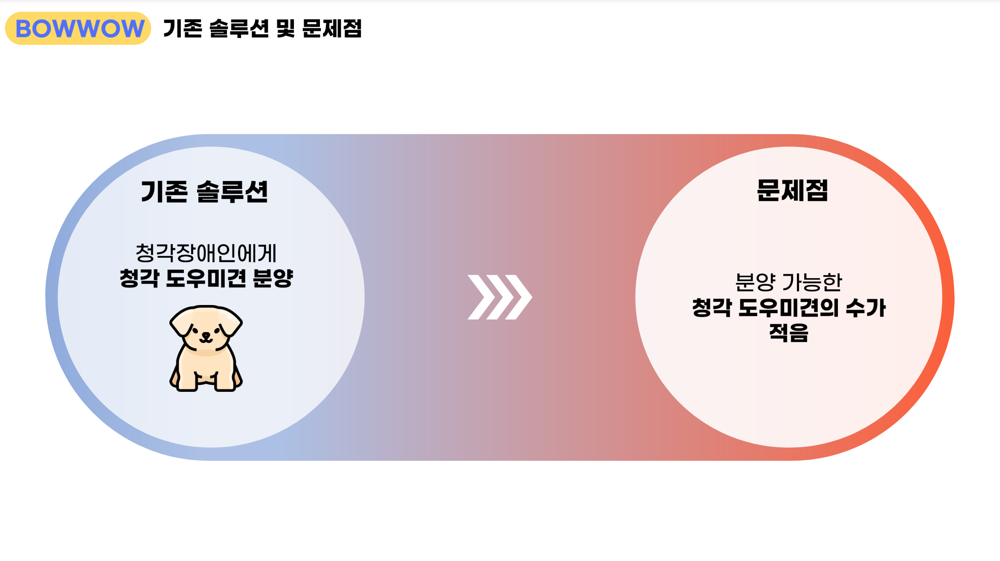
소셜 미션
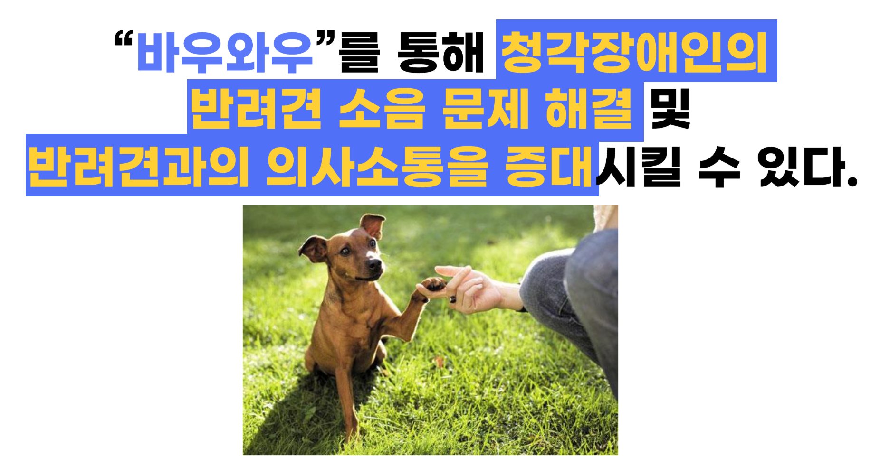
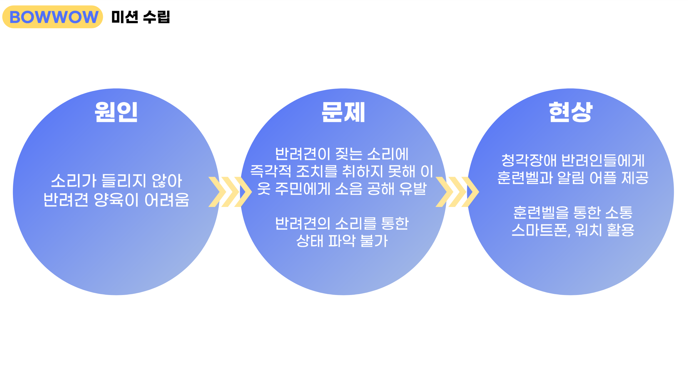
새로운 솔루션 제안
임팩트
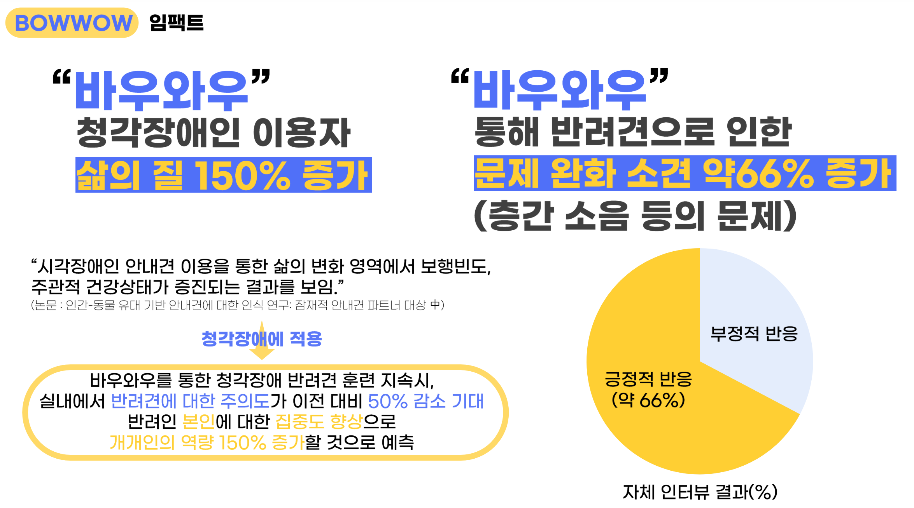
- 청각장애인 이용자의 삶의 질 150% 증가 기대, 반려견으로 인한 소음문제 완화 가능성 66% 증가
진입시장분석(시장세분화)
바우와우가 진입할 반려동물 시장의 동향과 교육/훈련분야 그리고 펫테크 시장 중 펫사물인터넷(IoT)에 대한 전망과 경쟁사 분석에 대한 결과는 다음과 같습니다.
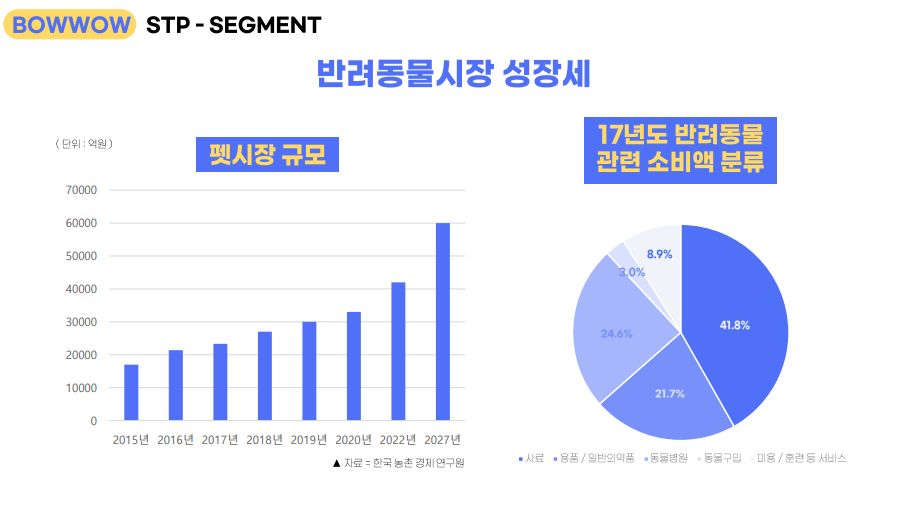
위의 표를 통해, 반려동물 시장은 꾸준히 성장하고 있으며 행위적 기준으로 세분화하였을 때 사료, 의약품, 병원, 훈련 등으로 구분 가능함을 알 수 있습니다. 그 중 훈련, 미용 등은 전체의 8.9퍼센트를 차지하고 있습니다.
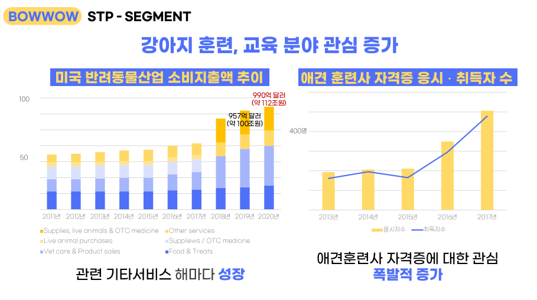
우측 표에서 주목할만한 점은 디지털 혁신 분야의 신생기업의 활발한 시장 진입이다. 해당 표에서도 알 수 있듯, 사료가 41.8%로 선진국 중심 글로벌 기업의 시장 지배력이 절대적이기 때문에 신생기업의 진입이 어렵습니다. 그러나 디지털 혁신제품은 기존 펫산업의 경쟁구도를 벗어나 새로운 방식의 반려동물 케어를 제안하여 반려인의 니즈를 충족시키기 때문에 신생기업들의 시장진입이 활발합니다.
또한 좌측 표를 통해 서비스(훈련, 교육)가 해마다 성장하고 있고, 우측 표를 통해 애견훈련사 자격증의 관심이 급격히 증가하고 있음을 알 수 있습니다. 따라서 해당 서비스를 진입 시장으로 삼아 안정적 수익구조를 창출하고자 합니다.
펫테크는 2020년 세계 투자액이 5천억 이상이며 투자 단계도 높아져 산업이 점차 성숙해져 가고 있는 것으로 분석됩니다. 해외 시장조사 업체 ID테크에 따르면 특히 펫사물인터넷(IoT) 시장은 2025년 26억 달러 규모로 성장할 전망이라고 합니다.
국내 기업들도 이러한 동향에 주목하고 있습니다. 너울정보는 반려견의 감정상태를 알려주는 목걸이 형태의 웨어러블 스마트기기 펫펄스를 출시했고, LG는 펫 자동급식기, 자동급수기 제품을 출시하고 있습니다.
해외 또한 IoT 기술 기반 펫테크 제품에 주목하고 있습니다. 중국 스타트업 앤트하우스는 반려동물과의 공놀이, 자동급식을 하는 AI 탑재 로봇 펫시터를 출시했으며, 프랑스의 NUM'AXES는 웨어러블 기기 ‘canicalm smart’를 출시해 블루투스로 연결된 목걸이로 멀리서도 반려동물의 짖는 빈도를 파악할 수 있게 하였습니다.
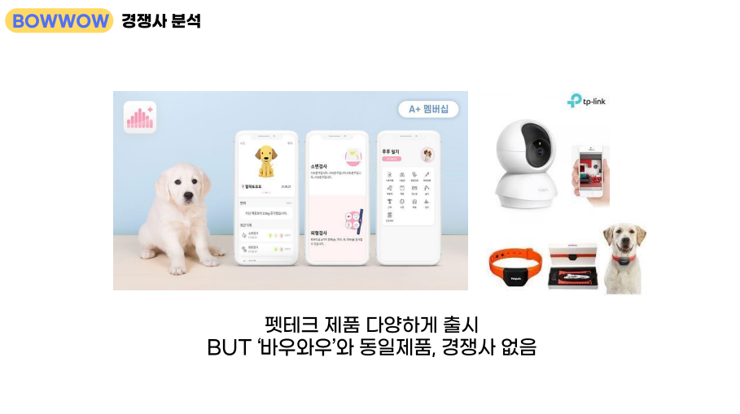
이렇게 펫테크 제품 중 IoT 기술을 접목한 어플을 출시한 사례는 다양합니다. 그러나 바우와우와 같이 “청각장애 반려인”이 대상인 유사 펫훈련 제품, 경쟁사는 아직까지 존재하지 않습니다. 따라서 시장이 블루오션이라는 점을 고려하면 바우와우의 안정적인 진입과 소비자 니즈 충족 가능성이 충분하다는 것을 알 수 있습니다.
인터뷰
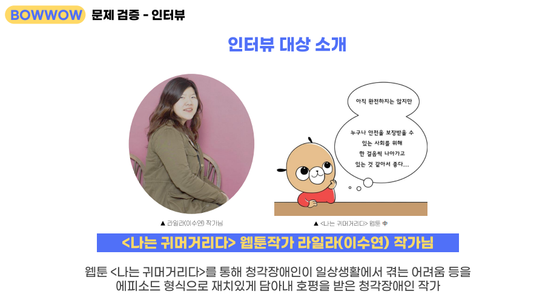
그래서 저희는 고객의 수요와 니즈를 더욱 명확하게 파악하기 위해 웹툰 [나는 귀머거리다]의 작가이자 반려견 다루와 거주중이신 이수연님을 인터뷰 했습니다.
여러 질문 중 가장 주목할만한 질답 두개를 추렸는데요, 먼저 바우와우가 실제로 도움이 될지에 대해 전반적으로 긍정적으로 전망하나, 벨의 색이 아닌 모양에 차별점을 두어야 한다는 구체적인 피드백을 통해 개발 방향성을 제시해주셨습니다.
또한 반려견의 의사표현 중 가장 인지하고 싶은 의사표현이 무엇이냐는 질문에 대해 이웃에게 폐를 끼치지 않기 위해 소음 전반을 인지하고 싶다고 답변해주셨습니다. 이를 통해 바우와우가 제시하는 솔루션과 가설이 적절하다는 것을 검증할 수 있었습니다.
따라서 저희는 반려견 훈련벨 알림어플과 가이드북을 제작하여 청각장애 반려인들이 겪는 반려견 소음 인지부족 문제를 해결하고자 합니다.
BM 상세설명
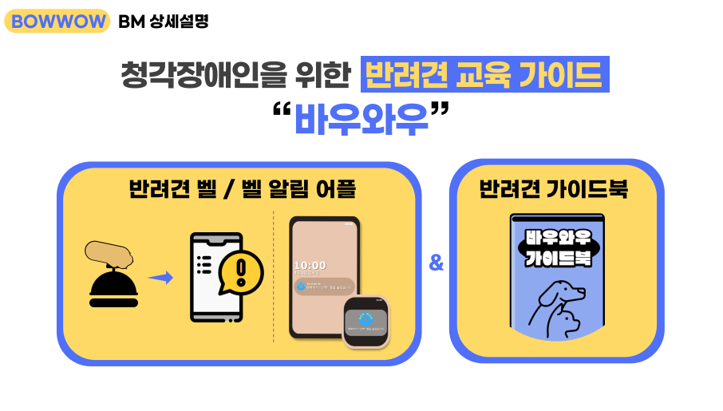
(1) 반려견이 누르는 벨
반려견 훈련을 위해 대중적으로 알려진 벨을 활용할 계획입니다. 그러나 <나
는 귀머 거리다>의 청각장애인 라일라 작가님의 인터뷰 중 반려견들은 색상보다
모양의 구분이 더 용이할 것이라는 내용을 기반으로, 훈련벨의 모양을 다르게 하여
제작할 계획입니다.
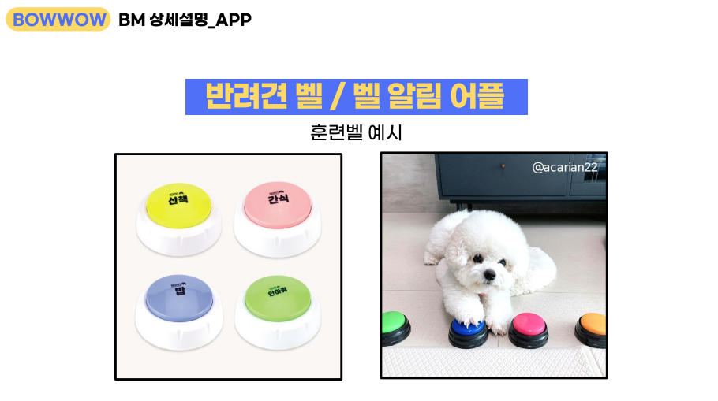
(2) 반려견이 벨을 누르면 알림이 뜨는 어플
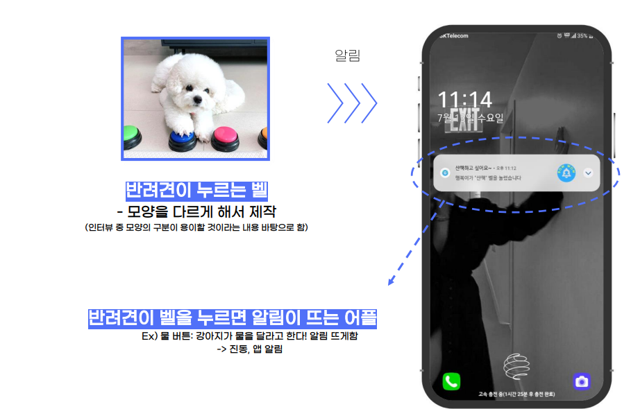
<바우와우 어플 예시 이미지>
예를 들어, 반려견이 물 버튼을 눌렀다면, 반려인의 스마트폰 혹은 스마트
워치에 ‘반려견이 물 버튼을 눌렀습니다’라는 알림을 진동과 함께 제공한다. 훈련
벨과 어플 사이의 기술적인 부분은 다음 목차-‘4) 비즈니스 모델 기술적 도식화’에
기재되어 있다.
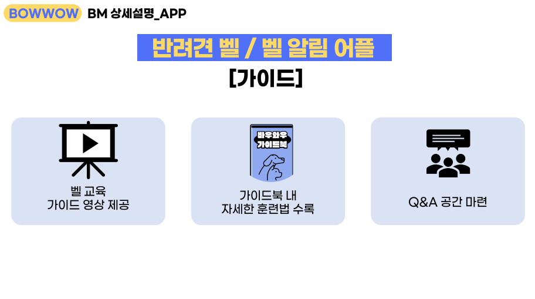
(3) 청각장애인 반려인을 위한 가이드북: ‘슬기롭게 강아지를 키우는 법’
<가이드북 예시 이미지>
가이드북의 내용은 크게 ‘실내’와 ‘실외’ 2가지의 파트로 구성된다.
Part.1 ‘실내’ / Part.2 ‘실외’
‘실내’ 파트에는 강아지 전문 훈련사와의 인터뷰, 반려견 관련 전문지식 그
리고 반려견 기본 교육 가이드를 담고자 한다.
‘실외’ 파트에는 청각장애인 반려인의 인터뷰를 수록하여 반려견 관련 현
실적인 조언을 담고자 한다. 더불어 외부활동에 도움이 될 수 있는 반려견 용품을
추천할 계획이다. 반려견 용품 브랜드 중 동물복지, 환경친화 등의 사회적 가치를
추구하는 브랜드를 컨택하여 가이드북에 담고, 가능하다면 시제품 홍보 시 함께 협
업하여 시너지 효과를 내고자 한다.
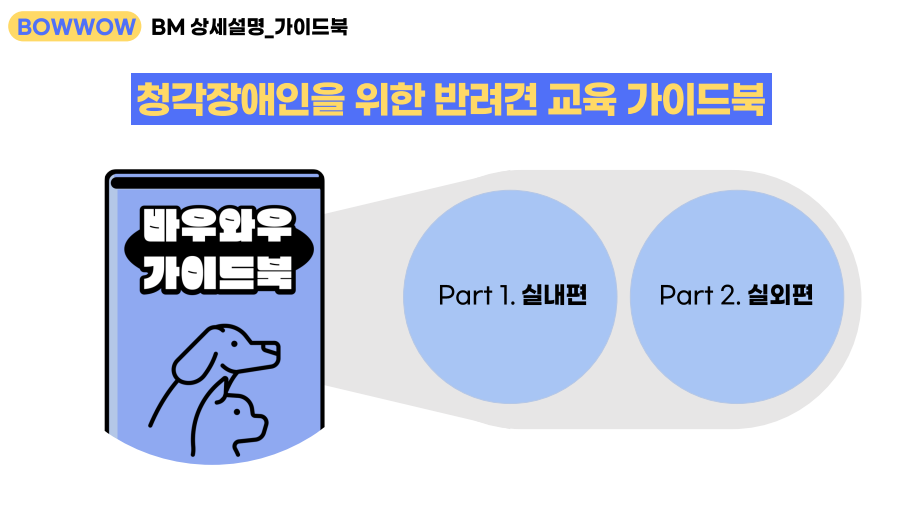
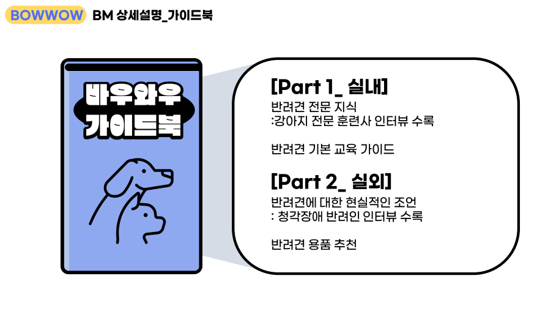
4) 비즈니스 모델 도식화
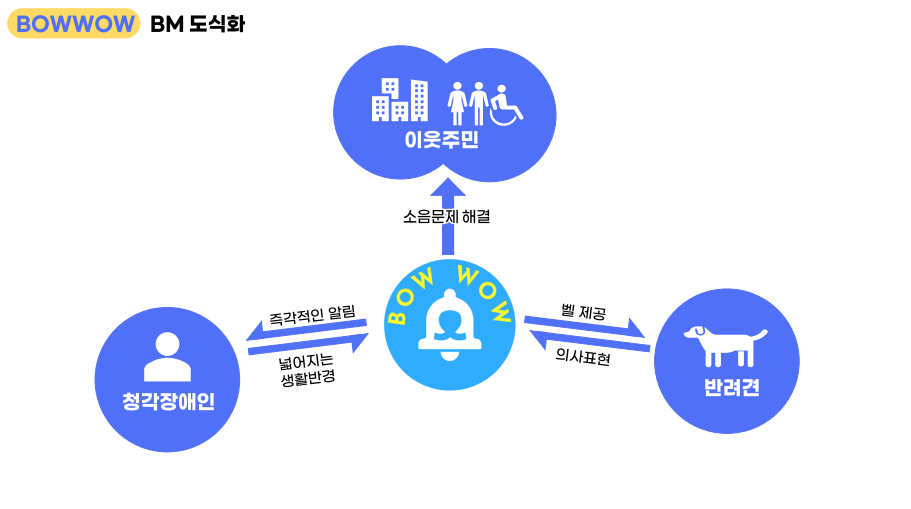
차별점
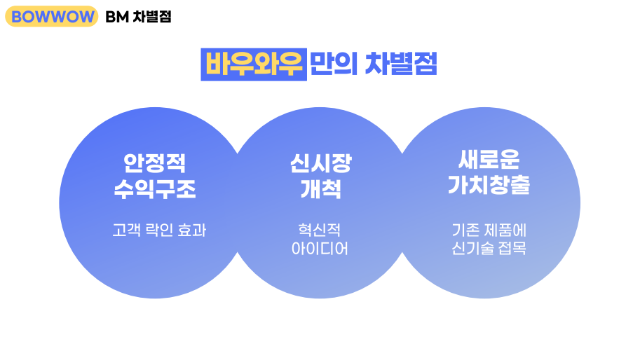
‘바우와우’가 가지는 독자적인 차별점은 아래와 같습니다.
첫째, 고객 락인 효과를 통한 안정적인 수익구조가 가능합니다. 반려인들이 원하는 서비스를 구현함으로써 소비자 가치를 극대화하고, 제품 연계 플랫폼을 활용한 서비스를 통해 고객이 지속적으로 플랫폼에 머무는 고객 락인효과를 얻을 수 있다. 따라서 이들의 지속적인 바우와우의 제품 사용이 기대됩니다.
둘째, 혁신적인 아이디어를 기반으로 신시장을 개척합니다. 반려견 교육 및 훈련에 해당되는 비즈니스 모델이지만, 대상이 청각장애 반려인이라는 점에서 새로운 시장을 개척하게 됩니다. 유사한 솔루션이 존재하지 않기 때문에, 바우와우를 시작으로 장애인을 위한 반려동물 시장이 확대될 것으로 기대됩니다.
셋째, 기존 제품에 신기술을 접목하는 것으로 새로운 가치창출이 가능합니다. 대중적으로 알려져 익숙한 훈련벨과 바우와우의 앱을 접목시켜 청각장애인의 니즈를 충족시킬 수 있을 것으로 예상됩니다. 바우와우의 앱으로 반려견의 의사표현을 스마트폰이나 스마트워치를 통해 알림을 확인할 수 있다면, 이전보다 확실한 반려견 케어가 가능해질 것입니다.
기대효과
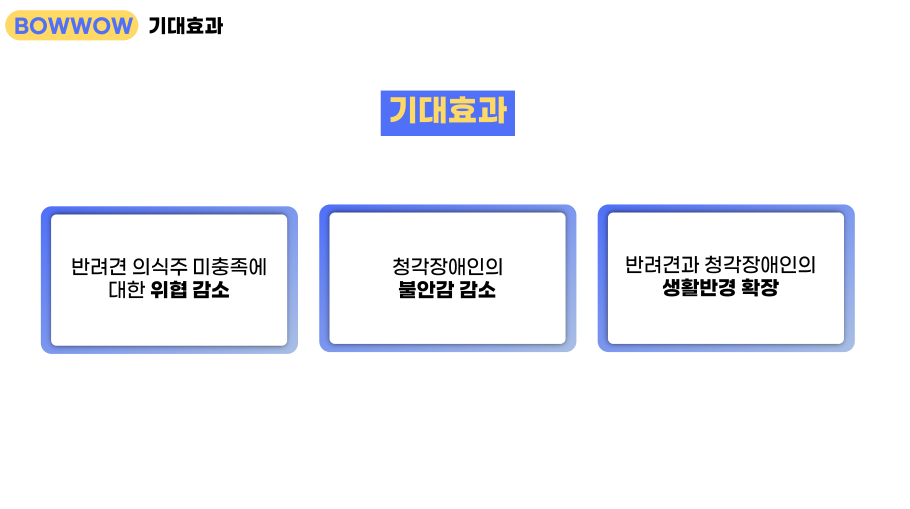
기대효과는 다음과 같습니다.
첫번째, 바우와우를 통해 반려견이 밥을 못 먹을까, 물을 못 마실까 등등 여러 걱정을 감소시켜 의식주에 대한 근본적인 위협을 감소할 수 있습니다.
두번째, 반려견이 짖는 소리를 알람으로 즉각적으로 알려주어 소음문제에 대한 불안감을 감소할 수 있습니다.
세번째, 반려견에게 쏟는 관심을 줄일 수 있으므로 청각장애인의 실내 생활반경이 확장될 수 있습니다.
사업화 전략
SWOT 분석을 통한 ‘바우와우’의 사업화 계획 전략은 다음과 같습니다.
강점(Strength)
- 신시장 개척: 반려동물 시장의 대부분의 타겟층은 비장애인입니다. 바우와우와 유사한 솔루션이 존재하지 않기 때문에, 바우와우를 시작으로 장애 반려인을 위한 반려동물 시장이 확대될 것으로 기대됩니다.
- 새로운 가치 창출: 대중적인 ‘훈련벨’과 바우와우 앱의 접목을 통해 청각장애인의 반려견 케어의 니즈를 충족시킬 수 있을 것으로 예상됩니다. 즉각적인 반려견의 의사표현 파악은 이전보다 확실한 케어를 가능하게 할 것입니다.
약점(Weakness)
- 경쟁력: 장애인의 생활 보조를 위한 도우미견이 있기 때문에, 바우와우의 제품이 이의 완전한 대체재로서 작용 가능성에 대한 의문이 제기될 것입니다.
- 펫테크 제품의 높은 소비자 가격: 미국 펫테크 소비자 53%가 제품 구매에 연 200달러 이상 지출합니다는 결과는 펫테크 제품이 높은 가격대임을 의미합니다. IoT기술 기반 바우와우 제품도 이에 해당되어 높은 가격을 제안합니다.
기회(Opportunity)
- 청각장애 반려인 사전인터뷰를 통한 긍정적 피드백: 수요가능성 파악을 위해 진행한 서면 인터뷰에서 긍정적인 답변을 얻은 것을 기반으로 바우와우의 비즈니스 모델이 청각장애 반려인에게 유익성이 있다고 판단했다.
- 반려동물 시장 속 펫테크 산업 확대: 펫테크 산업은 인지도가 낮아 잠재적 소비자가 많다. 반려동물 양육 경험이 있는 소비자가 타 소비자보다 펫테크 제품에 연간 더 큰 비용을 지출합니다는 분석을 기반으로 합니다.
위협(Threat)
- 아이디어 모방 가능성: 기존에 존재하는 ‘훈련벨’과 ‘사물 인터넷’의 접목이기 때문에 독자적인 기술이 아니다. 바우와우보다 많은 자금을 보유했다면 누구든 아이디어를 모방하여 시장에 진입이 가능합니다.
위 분석에서 도출된 약점 및 위험요소 보완 전략은 아래와 같습니다.
- 경쟁력
- 청각장애 보조견의 부족한 분양, 낮은 인지도로 인해 청각장애인들이 일반 반려견을 분양받는다는 사실 인식이 필요합니다. 또한, 기존 솔루션과의 차별점을 앞세워 바우와우만의 경쟁력을 확보할 것입니다.
- 펫테크 제품의 높은 소비자 가격
- 기존 제품과 기술의 접목으로, 새로운 기술 개발보다 적은 비용이 요구됩니다. 따라서, 일반 훈련제품 가격대보다는 높고 평균 30$ 이상 가격대의 펫 테크 제품보다는 낮은 가격대로 형성할 수 있습니다.
- 아이디어 모방 가능성
- 바우와우 훈련 제품 출시 이후, 사회적 약자를 위한 반려동물 관련 제품 및 서비스를 꾸준히 개발하여 바우와우만의 브랜드를 구축할 계획입니다.
포지셔닝 전략
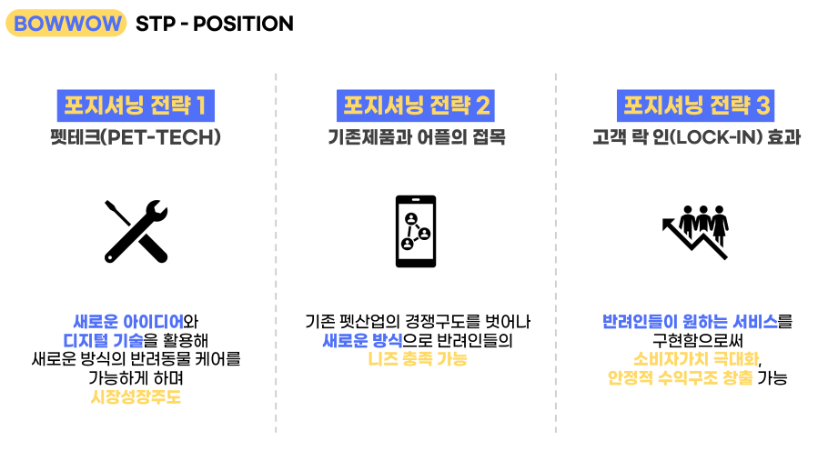
팀소개
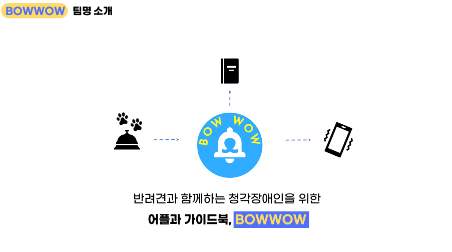
‘바우와우’는 두가지 의미를 지니고 있습니다.
먼저 첫번째, 바우와우는 강아지가 짖는 소리를 표현한 의성어로, 바우와우를 통해 강아지가 짖는 소리를 반려인에게 즉각적으로 알려주고자 하는 저희의 미션을 담았습니다.
두번째, 일부 청각장애인들이 인공와우 수술을 받아 청력을 제공 받습니다. 인공와우(cochlear implant)란 내이의 손상으로 인해 고도의 감각신경성난청 또는 전농이 된 환자에게 청신경의 전기자극으로 청력을 제공해 주는 장치인데요, 바우와우가 청각장애인들에게 인공와우의 역할을 하겠다 라는 의미를 담았습니다.